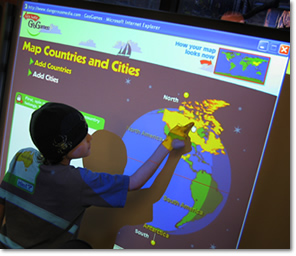

Research on GeoGames
During Reach the World’s study of children’s cognitive development in world geography, hundreds of elementary and middle school students were given the following prompt: “Draw a map of the world. Put in all the important places you can think of.” After analyzing hundreds of maps, the researchers identified the cognitive stages that children pass through as they move from drawing “non-maps” to “traditional maps”. They also identified six key concepts that a student needs in order to draw a traditional map: the map frame, the shape and placement of objects in the map, the orientation of these objects, the spatial relationships among them, the nesting of objects within objects, and the scale of the different objects.
Reach the World took the results of the study and turned them into two powerful teaching tools: GeoGames and the world geography mapping rubric. In GeoGames, the scaffolding, or order of activities, was designed to help students with all six concepts listed above. RTW’s geography teaching tools help educators assess students’ world geography knowledge, group students according to their proficiency levels, and teach world geography skills using interactive tools that support students’ cognitive development.
In 2007, Reach the World began an evaluation of GeoGames in a series of 3rd-, 4th-, and 5th-Grade classrooms. The study included a control group of classrooms that did not use GeoGames. Highlights of the results include the following points:
| • |
Classrooms where over 50 percent of the students converted from non-maps to traditional maps were GeoGames classrooms. |
| |
|
| • |
Classrooms where there was no conversion were non-GeoGames classrooms. |
| |
|
| • |
In terms of the amount of detail and the correct placement of that detail, the traditional maps drawn by students in non-GeoGames classrooms did not improve overall - and even went backward - while the traditional maps drawn by the students in GeoGames classrooms included much more detail and had more examples of correct nesting, even in the 3rd grade, where nesting is a particularly difficult concept. |
| |
|
| • |
Numerous teachers noted that GeoGames had helped the students with difficult concepts. For instance, one 5th-grade teacher wrote that the game helped her students distinguish between countries and cities - something that many of them had been unable to do. |
| |
|
| • |
Teachers wrote that using the mapping exercise and then GeoGames helped them realize how much their students did not know and that they needed to teach more of the basics of geography. |
| |
|
 In Development: GeoGames 3.0. In Development: GeoGames 3.0.
The first two versions of GeoGames were developed in partnership with the National Geography Society Education Foundation. In 2008, Dr. Lowes at Teachers College, Columbia University tested and evaluated both versions of GeoGames in real classrooms in order to study the games' efficacy as teaching tools. RTW's GeoGames are a proven and unique tool for teaching world geography, backed by academic research from one of the world's leading teaching colleges. The development of GeoGames 3.0 takes the knowledge gleaned from that study and the suggestions for improvements provided by Dr. Lowes and incorporates them into our mission to bring GeoGames to as many classrooms as possible.
In the first year of development for GeoGames 3.0, Reach the World will transform GeoGames from a single-player, Flash-based game into a family of educational games for an online community of educators, parents, and students. In version 3.0, GeoGames will transform from a game into a "social network" designed to support the creation of a variety of games and teaching tools by its own community, based on the educational needs of the individual students. In addition, Reach the World envisions several other expansions for GeoGames, including versions for mobile devices and the addition of video into the gaming experience.
New games will be developed to address issues such as climate change, macro-economics and population statistics. All current counties and capitals will become available on the rotatable/3D globe. Games will also be created on "Flat Maps", in order to deepen the understanding of map-to-globe relationships that are so critical to younger students.
Reach the World's GeoGames are not just an idea on paper; they are a proven tool that is being used in real classrooms by real teachers. Working to develop GeoGames 3.0 will be an opportunity to make a meaningful investment in one of the most important areas of education: world geography. The products produced from the next GeoGames development cycle will make a measurable impact on geography education for underprivileged children, through Reach the World, as well as on geography teaching and pedagogy nation- and world-wide.
To keep informed about our progress, click here to Join the Movement
|